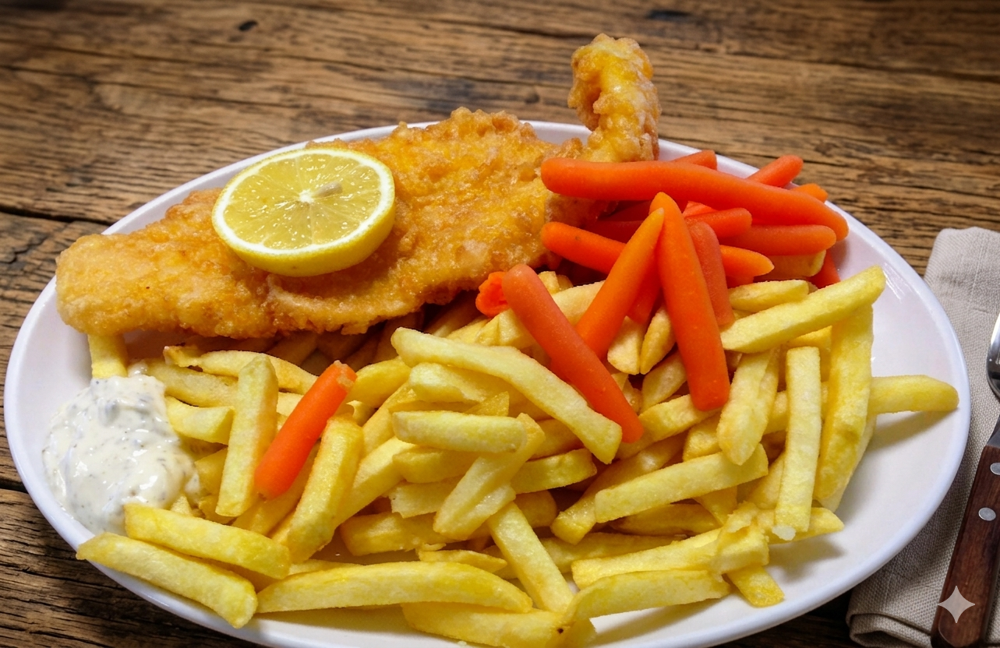

Sign up to have access to more local cuisine from Europe, to add comments, become
a blog author to share experiences, food and cooking styles. Post your
favorit food and your culinary experience from accross europe. Share a nice restaurant from
your trip which impressed you.
European cuisineis diverse and varies by country, but it generally features fresh, seasonal
ingredients, bold flavors, and a variety of cooking techniques. Europe's kitchen has a large variety of dishes because
it comprise more than 30 countries, each one with their own styles and culinary habits.
European cuisine uses fresh, locally sourced ingredients like fruits, vegetables, meats, and seafood.
Meat is more prominent in European cuisine than in East Asian cooking, and dairy products are also widely used.
🧅 What to eat in europe?
🍅 which are the most popular food dishes in europe?
🥦 which are the traditional food by each country in europe?
🥬 What can I eat in France, the best known everyday dishes?
🍩 What is recomended to eat in England?
🍕 What is the best food in Italy?
🍷 What food dishes are most beloved in Spain ?
🥣 Do you want your favorite dish to share on internet?
do you want to post on the blog? you should make a request to be approved
Spanish cuisine is known for dishes like paella, tapas, and jamón ibérico
and has spread in many countries, including through colonization, cultural
influences, and international recognition. In Great Britain paella can be found very easy in restaurants
and food stalls. Here a beloved paella shop in Borough Market in the city of London, oldest market in London,
you must see and taste the food, is one of the most
photographed food plate in the market, it is as well wide spred throughout London's markets
and restaurants.

Fish and chips in London
Fish and chips is one of the most beloved UK dish featuring the best battered fish (usually cod or haddock) and fried potatoes,
typically served with tartar sauce, mushy peas, and salt/vinegar. Top-rated traditional spots include Poppies (London)
and award-winning shops like Yarm Road Fish and Chips. Best enjoyed freshly fried from a local "chippy" or restaurants and markets
with prices often ranging from £7-£15. The Britain surrounded by sea the people love fish dishes and you will
find fish shops throughout London and cities from UK.